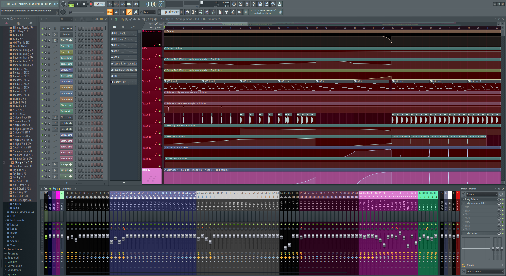

Fl Studio
my beloved
what is fl studio:
- fl studio is a DAW (digital audio workstation)
- i hate it so much but i love it more
- always remember to sidechain the kick to the master (very important information)
below is a (crazy) image of me praying to fl studio
you can see (probably not) that my kick is not sidechained to the master, this is because i am doing it incorrectly.

other important information
- there is no more important information
- link back to super crazy first page
obligatory div (marked)
div-ing